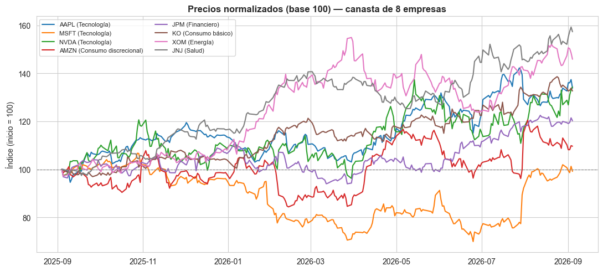
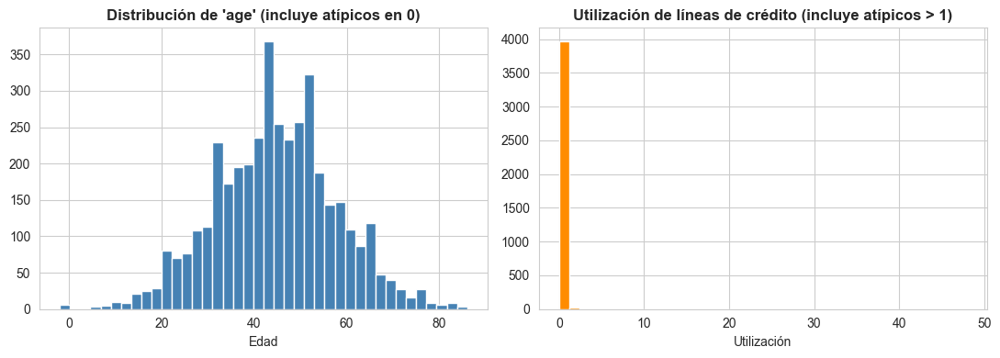

Flujos de Trabajo en Ciencia de Datos Financiera#
Este cuaderno establece la plantilla de flujo de trabajo que usaremos en cada sesión del curso: la secuencia estándar Carga de datos → Limpieza → Features → Modelo → Evaluación. No es un tema más, es el patrón operativo sobre el que se apoyan todos los demás cuadernos.
El cuaderno está organizado en cuatro bloques:
Setup reproducible: la plantilla de flujo de trabajo y una convención simple de control de versiones para nombrar y guardar archivos.
Descarga de datos reales: precios y estados financieros de varias empresas con
yfinance, comparados con una fuente de datos de crédito para scoring.Pipeline de limpieza: ejercicio guiado sobre un dataset con problemas reales (faltantes, atípicos, tipos mal definidos), usando
pandas+sklearn.Pipeline.Mini-reto de flujo completo: un ejercicio cronometrado en equipos de 2, que sirve como diagnóstico de nivel de Python.
Nota: este cuaderno descarga datos de mercado reales al ejecutarse (
yfinance). Los valores concretos que verás corresponden al momento de ejecución; lo que sí es reproducible es la metodología, la estructura del pipeline y el código.
[1]:
# Importación de librerías
import os
import json
import platform
from datetime import datetime
import numpy as np
import pandas as pd
import matplotlib.pyplot as plt
import seaborn as sns
import yfinance as yf
from sklearn.base import BaseEstimator, TransformerMixin
from sklearn.pipeline import Pipeline
from sklearn.compose import ColumnTransformer
from sklearn.impute import SimpleImputer
from sklearn.preprocessing import StandardScaler, OneHotEncoder
from sklearn.model_selection import train_test_split
import joblib
sns.set_style("whitegrid")
plt.rcParams["figure.dpi"] = 100
plt.rcParams["axes.titleweight"] = "bold"
SEMILLA = 42
np.random.seed(SEMILLA)
print("Librerías cargadas correctamente ✓")
Librerías cargadas correctamente ✓
1. Setup Reproducible: la Plantilla de Flujo de Trabajo#
1.1 El patrón de cinco etapas#
Todo proyecto de este curso —desde un ejercicio de 20 minutos hasta el proyecto final— sigue la misma secuencia de cinco etapas. Fijar este patrón desde ya evita que cada sesión empiece «en blanco» y hace que el trabajo de una sesión sea reutilizable en la siguiente.
Etapa |
Pregunta que responde |
Salida típica |
|---|---|---|
|
¿De dónde vienen los datos y cómo los traigo? |
|
|
¿Están completos, bien tipados y sin errores evidentes? |
|
|
¿Qué variables construyo para representar el problema? |
Matriz |
|
¿Qué algoritmo entreno y con qué partición de datos? |
Modelo entrenado |
|
¿Qué tan bien funciona y dónde falla? |
Métricas, gráficos de diagnóstico |
Cada etapa alimenta a la siguiente y no se debe saltar ninguna, incluso en un ejercicio exploratorio rápido: es preferible una versión mínima de las cinco etapas que una etapa «perfecta» seguida de un salto directo al modelo.
1.2 Ingredientes de la reproducibilidad#
Semillas fijas: cualquier proceso aleatorio (partición de datos, inicialización de modelos, generación de datos sintéticos) debe fijar una semilla (
random_state/np.random.seed).Registro del entorno: qué versiones de librerías se usaron, para poder diagnosticar por qué un resultado cambió.
Estructura de carpetas consistente: separar datos crudos de datos procesados, para nunca sobrescribir la fuente original.
proyecto/
├── data/
│ ├── raw/ # datos descargados, nunca se editan a mano
│ └── processed/ # datos limpios, listos para modelar
├── notebooks/
└── src/
[2]:
# Registro del entorno de ejecución (para reproducibilidad y depuración futura)
entorno = {
"fecha_ejecucion": datetime.now().strftime("%Y-%m-%d %H:%M"),
"python": platform.python_version(),
"numpy": np.__version__,
"pandas": pd.__version__,
"sklearn": __import__("sklearn").__version__,
"yfinance": yf.__version__,
}
for k, v in entorno.items():
print(f"{k:>16}: {v}")
os.makedirs("data/raw", exist_ok=True)
os.makedirs("data/processed", exist_ok=True)
fecha_ejecucion: 2026-09-04 14:59
python: 3.11.6
numpy: 2.4.2
pandas: 3.0.1
sklearn: 1.8.0
yfinance: 1.2.0
1.3 Control de versiones simple: nombrar y guardar archivos#
No necesitas Git avanzado para tener control de versiones razonable. Basta con una convención de nombres aplicada de forma disciplinada:
{iniciales_equipo}_{tema}_{fecha}_v{n}.ipynb
AB_flujos_trabajo_20260904_v1.ipynb
AB_flujos_trabajo_20260904_v2.ipynb ← nueva versión el mismo día, no se sobrescribe la v1
La misma lógica aplica a los datos que descargas o generas: un archivo de datos con fecha en el nombre te permite saber exactamente qué versión usó cada resultado.
Dónde guardar:
Google Drive (Colab):
from google.colab import drive; drive.mount('/content/drive'), y guarda dentro de una carpeta del curso compartida con tu equipo.GitHub: un repositorio por equipo, con
data/raw/en.gitignore(los datos crudos pueden pesar mucho y no aportan historial útil línea a línea) y solo el código y los datos procesados pequeños versionados.
# Flujo mínimo de Git para cada entrega
git add notebooks/AB_flujos_trabajo_20260904_v1.ipynb
git commit -m "Flujo de trabajo: carga y limpieza de precios y datos de crédito"
git push origin main
Construimos a continuación una función auxiliar que aplica esta convención automáticamente, para no depender de que cada estudiante la recuerde de memoria.
[3]:
def nombre_archivo_version(prefijo, extension="csv", carpeta="data/raw"):
"""Genera un nombre de archivo con fecha, siguiendo la convención del curso."""
fecha = datetime.now().strftime("%Y%m%d")
version = 1
while True:
nombre = f"{prefijo}_{fecha}_v{version}.{extension}"
ruta = os.path.join(carpeta, nombre)
if not os.path.exists(ruta):
return ruta
version += 1
# Ejemplo de uso
print(nombre_archivo_version("precios_acciones"))
print(nombre_archivo_version("datos_credito"))
data/raw/precios_acciones_20260904_v2.csv
data/raw/datos_credito_20260904_v2.csv
1.4 La plantilla como esqueleto de funciones#
Formalizamos las cinco etapas como funciones. Por ahora son solo el esqueleto (TODO); en las siguientes secciones las llenamos con el ejemplo real. Este esqueleto es literalmente lo que copiarás al inicio de cada sesión del curso.
[4]:
def cargar_datos():
"""Etapa 1: obtiene los datos crudos desde su fuente original."""
raise NotImplementedError("TODO: implementar según la fuente de datos de la sesión")
def limpiar_datos(df):
"""Etapa 2: corrige tipos, faltantes, atípicos y duplicados."""
raise NotImplementedError("TODO")
def construir_features(df):
"""Etapa 3: transforma columnas limpias en variables listas para modelar."""
raise NotImplementedError("TODO")
def entrenar_modelo(X_train, y_train):
"""Etapa 4: ajusta un modelo sobre los datos de entrenamiento."""
raise NotImplementedError("TODO")
def evaluar_modelo(modelo, X_test, y_test):
"""Etapa 5: calcula métricas y diagnósticos sobre datos no vistos."""
raise NotImplementedError("TODO")
print("Plantilla de flujo de trabajo definida ✓ (a llenar en las siguientes secciones)")
Plantilla de flujo de trabajo definida ✓ (a llenar en las siguientes secciones)
2. Descarga de Datos Reales#
Trabajaremos con dos fuentes de datos financieros muy distintas, a propósito: precios de mercado (series de tiempo) y datos de crédito (datos transversales de personas). Compararlas ayuda a entender que «datos financieros» no es un solo tipo de problema.
2.1 Precios de mercado con yfinance#
Descargamos precios diarios de una canasta diversificada de 8 empresas (distintos sectores, para que la variabilidad no dependa de un solo tipo de negocio).
[5]:
TICKERS = ["AAPL", "MSFT", "NVDA", "AMZN", "JPM", "KO", "XOM", "JNJ"]
SECTOR = {
"AAPL": "Tecnología", "MSFT": "Tecnología", "NVDA": "Tecnología",
"AMZN": "Consumo discrecional", "JPM": "Financiero", "KO": "Consumo básico",
"XOM": "Energía", "JNJ": "Salud",
}
precios_raw = yf.download(TICKERS, period="1y", auto_adjust=True, progress=False)
precios_cierre = precios_raw["Close"]
print(f"Rango de fechas: {precios_cierre.index.min().date()} → {precios_cierre.index.max().date()}")
print(f"Empresas descargadas: {list(precios_cierre.columns)}")
precios_cierre.tail()
Rango de fechas: 2025-09-04 → 2026-09-04
Empresas descargadas: ['AAPL', 'AMZN', 'JNJ', 'JPM', 'KO', 'MSFT', 'NVDA', 'XOM']
[5]:
| Ticker | AAPL | AMZN | JNJ | JPM | KO | MSFT | NVDA | XOM |
|---|---|---|---|---|---|---|---|---|
| Date | ||||||||
| 2026-08-31 | 316.850006 | 259.769989 | 265.850006 | 356.019989 | 88.669998 | 507.290009 | 220.779999 | 160.949997 |
| 2026-09-01 | 325.130005 | 254.919998 | 271.190002 | 354.950012 | 88.000000 | 501.019989 | 217.440002 | 164.550003 |
| 2026-09-02 | 324.959991 | 254.979996 | 275.209991 | 356.220001 | 88.239998 | 496.820007 | 224.410004 | 164.149994 |
| 2026-09-03 | 328.209991 | 258.899994 | 278.429993 | 362.059998 | 88.809998 | 510.119995 | 228.449997 | 162.210007 |
| 2026-09-04 | 319.700012 | 258.390015 | 275.029999 | 358.359985 | 88.025002 | 499.540009 | 230.179993 | 159.330002 |
[6]:
precios_normalizados = precios_cierre / precios_cierre.iloc[0] * 100
fig, ax = plt.subplots(figsize=(11, 5))
for ticker in TICKERS:
ax.plot(precios_normalizados.index, precios_normalizados[ticker], label=f"{ticker} ({SECTOR[ticker]})")
ax.axhline(100, color="grey", linewidth=0.8, linestyle="--")
ax.set_title("Precios normalizados (base 100) — canasta de 8 empresas")
ax.set_ylabel("Índice (inicio = 100)")
ax.legend(loc="upper left", fontsize=8, ncol=2)
plt.tight_layout()
plt.show()

2.2 Estados financieros básicos#
Además del precio, yfinance expone estados financieros (income_stmt, balance_sheet) para cada empresa a través de yf.Ticker. Como estas consultas son más pesadas (y a veces fallan o vienen incompletas según la empresa), envolvemos la descarga en manejo de errores: en producción nunca asumas que una fuente externa responderá siempre igual.
[7]:
def obtener_fundamentales(ticker):
"""Descarga un resumen de estados financieros para un ticker. Devuelve None si falla."""
try:
t = yf.Ticker(ticker)
income = t.income_stmt
balance = t.balance_sheet
return {
"ticker": ticker,
"ingresos_totales": income.loc["Total Revenue"].iloc[0] if "Total Revenue" in income.index else np.nan,
"utilidad_neta": income.loc["Net Income"].iloc[0] if "Net Income" in income.index else np.nan,
"deuda_total": balance.loc["Total Debt"].iloc[0] if "Total Debt" in balance.index else np.nan,
"patrimonio": balance.loc["Stockholders Equity"].iloc[0] if "Stockholders Equity" in balance.index else np.nan,
}
except Exception as e:
print(f" ⚠ No se pudo obtener información fundamental de {ticker}: {e}")
return None
TICKERS_FUNDAMENTALES = ["AAPL", "JPM", "KO"] # subconjunto: estas consultas son más lentas
filas_fundamentales = [f for f in (obtener_fundamentales(tk) for tk in TICKERS_FUNDAMENTALES) if f is not None]
fundamentales = pd.DataFrame(filas_fundamentales).set_index("ticker")
fundamentales["margen_neto"] = fundamentales["utilidad_neta"] / fundamentales["ingresos_totales"]
fundamentales["deuda_patrimonio"] = fundamentales["deuda_total"] / fundamentales["patrimonio"]
fundamentales
[7]:
| ingresos_totales | utilidad_neta | deuda_total | patrimonio | margen_neto | deuda_patrimonio | |
|---|---|---|---|---|---|---|
| ticker | ||||||
| AAPL | 4.161610e+11 | 1.120100e+11 | 9.865700e+10 | 7.373300e+10 | 0.269151 | 1.338030 |
| JPM | 1.818470e+11 | 5.704800e+10 | 4.999820e+11 | 3.624380e+11 | 0.313714 | 1.379497 |
| KO | 4.794100e+10 | 1.310700e+10 | 4.549200e+10 | 3.216900e+10 | 0.273399 | 1.414156 |
2.3 Una fuente de datos muy distinta: credit scoring#
Para contrastar, incorporamos un dataset de crédito al consumidor, del estilo del clásico Give Me Some Credit (Kaggle): cada fila es una persona, no una empresa ni un día de mercado, y la variable objetivo es binaria (¿incumplió en los próximos 2 años?), no un precio continuo.
Este es exactamente el tipo de dataset real que usarás más adelante para credit scoring. Si tienes acceso a Kaggle, puedes descargar el dataset real (búscalo como «Give Me Some Credit», o alternativamente «Lending Club Loan Data») y colocarlo en data/raw/cs-training.csv; el siguiente bloque lo detecta automáticamente. Si no está disponible, generamos datos sintéticos con la misma estructura de columnas y los mismos problemas de calidad típicos del dataset real (variables
faltantes, atípicos, tipos mal definidos), para que el pipeline de limpieza de la sección 3 sea idéntico al que aplicarías sobre los datos reales.
[8]:
def generar_datos_credito_sintetico(n=4000, semilla=SEMILLA):
"""Genera un dataset con la misma estructura y los mismos problemas de calidad
que 'Give Me Some Credit', para practicar el pipeline de limpieza sin depender
de credenciales externas."""
rng = np.random.default_rng(semilla)
edad = rng.normal(45, 13, n).round().astype(int)
utilizacion = np.abs(rng.normal(0.3, 0.35, n)) # utilización de líneas de crédito
ratio_deuda = np.abs(rng.normal(0.35, 0.6, n))
ingreso_mensual = rng.lognormal(mean=8.1, sigma=0.5, size=n).round(2)
n_lineas_credito = rng.poisson(8, n)
n_dependientes = rng.poisson(0.8, n)
atrasos_30_59 = rng.poisson(0.3, n)
atrasos_60_89 = rng.poisson(0.1, n)
atrasos_90 = rng.poisson(0.1, n)
n_inmuebles = rng.poisson(1, n)
# Probabilidad de incumplimiento: mayor utilización, atrasos y deuda -> mayor riesgo.
# El intercepto se calibró para que la tasa base ronde ~7%, similar a la del dataset real.
logit = (-4.2 + 2.5 * utilizacion + 0.8 * atrasos_90 + 0.5 * atrasos_60_89
+ 0.3 * atrasos_30_59 + 0.5 * ratio_deuda - 0.01 * (edad - 45))
prob_incumplimiento = 1 / (1 + np.exp(-logit))
incumplimiento = rng.binomial(1, np.clip(prob_incumplimiento, 0, 1))
df = pd.DataFrame({
"SeriousDlqin2yrs": incumplimiento,
"RevolvingUtilizationOfUnsecuredLines": utilizacion,
"age": edad,
"NumberOfTime30-59DaysPastDueNotWorse": atrasos_30_59,
"DebtRatio": ratio_deuda,
"MonthlyIncome": ingreso_mensual,
"NumberOfOpenCreditLinesAndLoans": n_lineas_credito,
"NumberOfTimes90DaysLate": atrasos_90,
"NumberRealEstateLoansOrLines": n_inmuebles,
"NumberOfTime60-89DaysPastDueNotWorse": atrasos_60_89,
"NumberOfDependents": n_dependientes,
})
# ── Se inyectan deliberadamente los mismos problemas de calidad del dataset real ──
idx_ingreso_nulo = rng.choice(n, size=int(n * 0.20), replace=False) # ~20% de faltantes en MonthlyIncome, igual que en los datos reales
df.loc[idx_ingreso_nulo, "MonthlyIncome"] = np.nan
idx_dependientes_nulo = rng.choice(n, size=int(n * 0.03), replace=False)
df.loc[idx_dependientes_nulo, "NumberOfDependents"] = np.nan
idx_edad_atipica = rng.choice(n, size=5, replace=False)
df.loc[idx_edad_atipica, "age"] = 0 # edad = 0, error de captura conocido en el dataset real
idx_utilizacion_atipica = rng.choice(n, size=10, replace=False)
df.loc[idx_utilizacion_atipica, "RevolvingUtilizationOfUnsecuredLines"] = rng.uniform(10, 50, 10) # utilización > 1000%
df["age"] = df["age"].astype(str) # tipo de dato mal definido a propósito (debería ser numérico)
return df
ruta_local_real = "data/raw/cs-training.csv"
if os.path.exists(ruta_local_real):
datos_credito = pd.read_csv(ruta_local_real)
print("Usando el dataset real encontrado en", ruta_local_real)
else:
datos_credito = generar_datos_credito_sintetico()
print("No se encontró un dataset real local: usando datos sintéticos con la misma estructura.")
datos_credito.head()
No se encontró un dataset real local: usando datos sintéticos con la misma estructura.
[8]:
| SeriousDlqin2yrs | RevolvingUtilizationOfUnsecuredLines | age | NumberOfTime30-59DaysPastDueNotWorse | DebtRatio | MonthlyIncome | NumberOfOpenCreditLinesAndLoans | NumberOfTimes90DaysLate | NumberRealEstateLoansOrLines | NumberOfTime60-89DaysPastDueNotWorse | NumberOfDependents | |
|---|---|---|---|---|---|---|---|---|---|---|---|
| 0 | 0 | 0.388622 | 49 | 0 | 0.550161 | 2821.73 | 9 | 0 | 1 | 0 | 1.0 |
| 1 | 0 | 0.613326 | 31 | 1 | 1.091806 | 3395.20 | 9 | 0 | 1 | 0 | 0.0 |
| 2 | 1 | 0.395662 | 55 | 1 | 1.079498 | 1771.57 | 12 | 0 | 1 | 0 | 3.0 |
| 3 | 0 | 1.083591 | 57 | 0 | 0.079426 | 1646.03 | 3 | 0 | 1 | 0 | 1.0 |
| 4 | 0 | 0.800426 | 20 | 0 | 0.466410 | 3608.87 | 11 | 0 | 2 | 0 | 0.0 |
2.4 Dos tipos de problema, en una sola tabla comparativa#
Precios de mercado (sección 2.1–2.2) |
Datos de crédito (sección 2.3) |
|
|---|---|---|
Unidad de observación |
Empresa – día |
Persona |
Estructura |
Serie de tiempo |
Datos transversales (cross-sectional) |
Variable objetivo típica |
Retorno futuro (continua) |
Incumplimiento (binaria) |
Riesgo principal al modelar |
Fuga de información temporal (ver cuaderno anterior) |
Sesgo de selección, variables proxy de discriminación |
Partición de datos |
Debe ser cronológica |
Puede ser aleatoria (no hay orden temporal entre personas) |
Guardamos ambas fuentes descargadas, aplicando la convención de nombres de la sección 1.3.
[9]:
ruta_precios = nombre_archivo_version("precios_acciones")
ruta_fundamentales = nombre_archivo_version("fundamentales")
ruta_credito = nombre_archivo_version("datos_credito")
precios_cierre.to_csv(ruta_precios)
fundamentales.to_csv(ruta_fundamentales)
datos_credito.to_csv(ruta_credito, index=False)
print("Archivos guardados:")
for ruta in [ruta_precios, ruta_fundamentales, ruta_credito]:
print(" -", ruta)
Archivos guardados:
- data/raw/precios_acciones_20260904_v2.csv
- data/raw/fundamentales_20260904_v2.csv
- data/raw/datos_credito_20260904_v2.csv
3. Pipeline de Limpieza: de datos_credito a una Matriz Modelable#
Usamos el dataset de crédito de la sección 2.3, que ya trae —a propósito— los problemas típicos de un dataset real: valores faltantes, atípicos y una columna con el tipo de dato equivocado.
3.1 Diagnóstico#
Antes de corregir nada, cuantificamos el problema.
[10]:
print("Dimensiones:", datos_credito.shape)
print("\nTipos de dato:\n", datos_credito.dtypes)
print("\nValores faltantes por columna:\n", datos_credito.isna().sum())
print("\nFilas duplicadas:", datos_credito.duplicated().sum())
Dimensiones: (4000, 11)
Tipos de dato:
SeriousDlqin2yrs int64
RevolvingUtilizationOfUnsecuredLines float64
age str
NumberOfTime30-59DaysPastDueNotWorse int64
DebtRatio float64
MonthlyIncome float64
NumberOfOpenCreditLinesAndLoans int64
NumberOfTimes90DaysLate int64
NumberRealEstateLoansOrLines int64
NumberOfTime60-89DaysPastDueNotWorse int64
NumberOfDependents float64
dtype: object
Valores faltantes por columna:
SeriousDlqin2yrs 0
RevolvingUtilizationOfUnsecuredLines 0
age 0
NumberOfTime30-59DaysPastDueNotWorse 0
DebtRatio 0
MonthlyIncome 800
NumberOfOpenCreditLinesAndLoans 0
NumberOfTimes90DaysLate 0
NumberRealEstateLoansOrLines 0
NumberOfTime60-89DaysPastDueNotWorse 0
NumberOfDependents 120
dtype: int64
Filas duplicadas: 0
[11]:
fig, axes = plt.subplots(1, 2, figsize=(11, 4))
axes[0].hist(datos_credito["age"].astype(float), bins=40, color="steelblue")
axes[0].set_title("Distribución de 'age' (incluye atípicos en 0)")
axes[0].set_xlabel("Edad")
axes[1].hist(datos_credito["RevolvingUtilizationOfUnsecuredLines"], bins=40, color="darkorange")
axes[1].set_title("Utilización de líneas de crédito (incluye atípicos > 1)")
axes[1].set_xlabel("Utilización")
plt.tight_layout()
plt.show()

3.2 De correcciones sueltas a un Pipeline#
Podríamos corregir cada problema con líneas de pandas sueltas, pero eso tiene un riesgo: la próxima vez que lleguen datos nuevos (o al aplicar el modelo a datos de prueba), hay que recordar y repetir manualmente cada corrección, en el orden correcto. sklearn.Pipeline resuelve esto encapsulando cada paso como un objeto que se ajusta una vez sobre entrenamiento (fit) y se aplica consistentemente sobre cualquier dato nuevo (transform) — el mismo principio de «ajustar
solo con entrenamiento» que vimos para el escalado de variables en el cuaderno anterior, ahora formalizado como el patrón que usaremos en todo el curso.
Como los datos de crédito son transversales (no series de tiempo), aquí sí es válido un train_test_split aleatorio — a diferencia de los precios de mercado, donde vimos que la partición debe ser cronológica.
[12]:
# Corregimos primero el tipo de dato mal definido (age llegó como texto)
datos_credito["age"] = pd.to_numeric(datos_credito["age"], errors="coerce")
objetivo = "SeriousDlqin2yrs"
X = datos_credito.drop(columns=[objetivo])
y = datos_credito[objetivo]
X_train, X_test, y_train, y_test = train_test_split(
X, y, test_size=0.2, random_state=SEMILLA, stratify=y
)
print(f"Entrenamiento: {X_train.shape} | Prueba: {X_test.shape}")
print(f"Tasa de incumplimiento — train: {y_train.mean():.2%} | test: {y_test.mean():.2%}")
Entrenamiento: (3200, 10) | Prueba: (800, 10)
Tasa de incumplimiento — train: 7.81% | test: 7.75%
3.3 Un transformador propio: capado de atípicos por IQR#
sklearn trae imputadores y escaladores listos, pero el tratamiento de atípicos suele ser específico del problema. Construimos un transformador propio compatible con Pipeline, heredando de BaseEstimator y TransformerMixin: aprende los límites (fit) solo con entrenamiento y los aplica (transform) a cualquier dato nuevo, evitando de nuevo la fuga de información.
[13]:
class CapadorAtipicosIQR(BaseEstimator, TransformerMixin):
"""Capa (censura) valores fuera de [Q1 - factor*IQR, Q3 + factor*IQR],
aprendiendo los límites únicamente del conjunto de entrenamiento."""
def __init__(self, factor=3.0):
self.factor = factor
def fit(self, X, y=None):
X = np.asarray(X, dtype=float)
q1 = np.nanpercentile(X, 25, axis=0)
q3 = np.nanpercentile(X, 75, axis=0)
iqr = q3 - q1
self.limite_inferior_ = q1 - self.factor * iqr
self.limite_superior_ = q3 + self.factor * iqr
return self
def transform(self, X):
X = np.asarray(X, dtype=float).copy()
return np.clip(X, self.limite_inferior_, self.limite_superior_)
print("Transformador definido ✓")
Transformador definido ✓
[14]:
columnas_numericas = X_train.columns.tolist() # todas las columnas de este dataset son numéricas
pipeline_limpieza = Pipeline([
("imputar", SimpleImputer(strategy="median")), # completa faltantes con la mediana de entrenamiento
("capar_atipicos", CapadorAtipicosIQR(factor=3.0)),
("escalar", StandardScaler()),
])
X_train_limpio = pipeline_limpieza.fit_transform(X_train) # fit + transform SOLO en entrenamiento
X_test_limpio = pipeline_limpieza.transform(X_test) # el conjunto de prueba solo se transforma
X_train_limpio = pd.DataFrame(X_train_limpio, columns=columnas_numericas, index=X_train.index)
X_test_limpio = pd.DataFrame(X_test_limpio, columns=columnas_numericas, index=X_test.index)
print("Faltantes tras el pipeline — train:", X_train_limpio.isna().sum().sum(), "| test:", X_test_limpio.isna().sum().sum())
X_train_limpio.describe().T[["mean", "std", "min", "max"]].round(2)
Faltantes tras el pipeline — train: 0 | test: 0
[14]:
| mean | std | min | max | |
|---|---|---|---|---|
| RevolvingUtilizationOfUnsecuredLines | 0.0 | 1.0 | -1.36 | 4.67 |
| age | 0.0 | 1.0 | -3.57 | 3.19 |
| NumberOfTime30-59DaysPastDueNotWorse | 0.0 | 1.0 | -0.55 | 6.66 |
| DebtRatio | -0.0 | 1.0 | -1.33 | 4.61 |
| MonthlyIncome | 0.0 | 1.0 | -1.84 | 3.27 |
| NumberOfOpenCreditLinesAndLoans | 0.0 | 1.0 | -2.79 | 4.16 |
| NumberOfTimes90DaysLate | 0.0 | 0.0 | 0.00 | 0.00 |
| NumberRealEstateLoansOrLines | -0.0 | 1.0 | -1.00 | 4.91 |
| NumberOfTime60-89DaysPastDueNotWorse | 0.0 | 0.0 | 0.00 | 0.00 |
| NumberOfDependents | 0.0 | 1.0 | -0.92 | 3.74 |
3.4 Persistir el pipeline ajustado#
El pipeline ya ajustado es, en sí mismo, un artefacto reutilizable: lo guardamos con joblib para poder aplicarlo sobre datos nuevos sin volver a ajustarlo, siguiendo la misma convención de nombres de la sección 1.
[15]:
ruta_pipeline = nombre_archivo_version("pipeline_limpieza_credito", extension="joblib", carpeta="data/processed")
joblib.dump(pipeline_limpieza, ruta_pipeline)
print("Pipeline guardado en:", ruta_pipeline)
Pipeline guardado en: data/processed/pipeline_limpieza_credito_20260904_v2.joblib
4. Mini-Reto de Flujo Completo (Diagnóstico en Equipos de 2)#
Contexto#
Este ejercicio funciona como diagnóstico de nivel de Python al inicio del curso: no se espera un resultado perfecto, sino observar cómo cada equipo razona y prioriza frente a un dataset crudo bajo presión de tiempo.
Instrucciones#
Equipos: parejas (asignadas o libres, según defina el docente).
Tiempo: 45 minutos, sin excepciones.
Punto de partida: el archivo crudo generado en la celda siguiente (
reto_datos_crudos_*.csv), que combina precios y variables fundamentales de las empresas de la sección 2, deliberadamente desordenado.Entregable: un notebook (
Equipo{N}_reto_flujos_v1.ipynb, siguiendo la convención de la sección 1.3) que, a partir del CSV crudo, produzca unDataFramemodelable.
¿Qué significa «modelable»? — checklist de entrega#
☐ Cada columna tiene el tipo de dato correcto (fechas como
datetime, números comofloat/int, no como texto).☐ No quedan valores faltantes sin una decisión explícita y justificada (imputación, eliminación, o una columna indicadora de que el dato faltaba).
☐ No hay filas duplicadas.
☐ Las categorías de texto están estandarizadas (sin mayúsculas/minúsculas mezcladas, sin espacios extra, sin dos etiquetas distintas para el mismo valor).
☐ Existe una variable objetivo (o al menos una propuesta razonada de cuál sería) claramente identificada.
☐ El equipo puede explicar, en una frase por columna, qué decisión tomó y por qué.
Rúbrica sugerida (100 puntos)#
Criterio |
Peso |
Qué se evalúa |
|---|---|---|
Diagnóstico inicial |
20 |
Identifican correctamente los problemas del dataset antes de corregir |
Corrección de tipos y duplicados |
20 |
|
Tratamiento de faltantes y atípicos |
25 |
Decisiones justificadas, no solo |
Uso del patrón de la sección 1 |
15 |
El notebook entregado sigue la plantilla de 5 etapas |
Claridad y justificación |
20 |
Explican el porqué de cada decisión, no solo el qué |
Generación del dataset crudo del reto (uso del docente)#
La siguiente celda produce el archivo que se entrega a los estudiantes. No contiene la solución: solo empaqueta datos reales ya descargados en la sección 2 con desorden típico de una exportación descuidada (columnas con símbolos de moneda, formatos de fecha inconsistentes, filas duplicadas, texto sin estandarizar).
[16]:
def generar_dataset_reto(precios, fundamentales, sectores, semilla=SEMILLA):
"""Combina precios y fundamentales reales en un dataset crudo y desordenado
para el mini-reto. No resuelve el ejercicio, solo lo empaqueta."""
rng = np.random.default_rng(semilla)
ultimo_precio = precios.iloc[-1]
retorno_3m = precios.iloc[-1] / precios.iloc[-63] - 1
filas = []
for ticker in precios.columns:
fila = {
"Ticker ": f" {ticker}", # espacios sueltos en nombre y valores
"Sector": sectores.get(ticker, "Desconocido").upper() if rng.random() < 0.5 else sectores.get(ticker, "desconocido").lower(),
"PrecioActual": f"${ultimo_precio[ticker]:,.2f}", # numérico disfrazado de texto, con símbolo y coma
"Retorno3M(%)": f"{retorno_3m[ticker] * 100:.1f}%", # numérico disfrazado de texto, con símbolo %
"IngresosTotales": fundamentales.loc[ticker, "ingresos_totales"] if ticker in fundamentales.index else None,
"FechaCorte": rng.choice(["2026-09-04", "04/09/2026", "2026.09.04"]), # formatos de fecha inconsistentes
}
filas.append(fila)
df_reto = pd.DataFrame(filas)
df_reto = pd.concat([df_reto, df_reto.iloc[[0]]], ignore_index=True) # una fila duplicada
return df_reto
dataset_reto = generar_dataset_reto(precios_cierre, fundamentales, SECTOR)
ruta_reto = nombre_archivo_version("reto_datos_crudos")
dataset_reto.to_csv(ruta_reto, index=False)
print("Dataset del mini-reto guardado en:", ruta_reto)
dataset_reto
Dataset del mini-reto guardado en: data/raw/reto_datos_crudos_20260904_v2.csv
[16]:
| Ticker | Sector | PrecioActual | Retorno3M(%) | IngresosTotales | FechaCorte | |
|---|---|---|---|---|---|---|
| 0 | AAPL | tecnología | $319.70 | 6.1% | 4.161610e+11 | 04/09/2026 |
| 1 | AMZN | consumo discrecional | $258.39 | 5.4% | NaN | 04/09/2026 |
| 2 | JNJ | salud | $275.03 | 19.0% | NaN | 2026-09-04 |
| 3 | JPM | financiero | $358.36 | 15.7% | 1.818470e+11 | 2026-09-04 |
| 4 | KO | consumo básico | $88.03 | 11.4% | 4.794100e+10 | 2026.09.04 |
| 5 | MSFT | TECNOLOGÍA | $499.54 | 21.6% | NaN | 2026.09.04 |
| 6 | NVDA | TECNOLOGÍA | $230.18 | 10.3% | NaN | 04/09/2026 |
| 7 | XOM | energía | $159.33 | 5.7% | NaN | 04/09/2026 |
| 8 | AAPL | tecnología | $319.70 | 6.1% | 4.161610e+11 | 04/09/2026 |
Nota para el docente: se recomienda revisar en los últimos 5 minutos únicamente el
df.info()ydf.head()de cada equipo, sin corregir el ejercicio en el momento — es un diagnóstico, no una entrega evaluable con retroalimentación detallada inmediata. La corrección detallada, si aplica, puede hacerse después de clase contra la checklist de la sección anterior.
5. Conclusiones#
El patrón
Carga → Limpieza → Features → Modelo → Evaluación(sección 1) es la estructura que reutilizarás en cada sesión del curso, no un ejercicio aislado.Trabajar con datos reales (
yfinance) obliga a manejar fallas, límites de la fuente y estructuras distintas entre tipos de datos financieros (mercado vs. crédito) — algo que no aparece al trabajar solo con datos simulados.sklearn.Pipelineno es un detalle técnico opcional: es lo que permite aplicar exactamente el mismo proceso de limpieza a datos nuevos sin fuga de información, y es el patrón que verás una y otra vez en el curso.El mini-reto no busca un resultado perfecto: es una foto del punto de partida de cada equipo, útil tanto para el docente (calibrar el curso) como para cada estudiante (saber en qué reforzar).
Próximos pasos: en las siguientes sesiones, cada nuevo tema (series de tiempo, modelos de clasificación para scoring, portafolios) partirá de esta misma plantilla, reemplazando únicamente lo específico del problema.